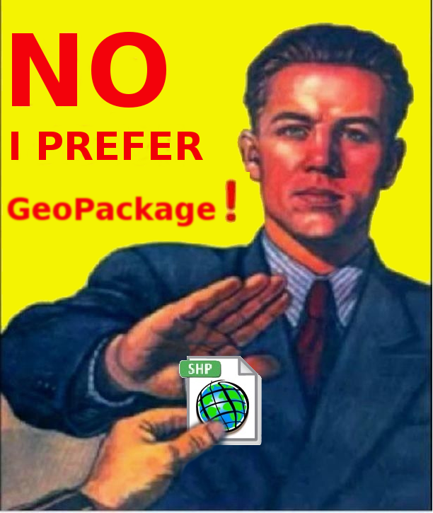

5 Форматы данных, используемые в ГИС
Основные типы данных, используемые в геоинформационных системах - растровые и векторные данные.
Растровые данные - это матрица или сетка, в каждой ячейке (пикселе) которой содержится числовое значение. В качестве растровых данных могут быть использованы цифровые изображения или значения непрерывных величин (например, рельеф).
В векторных данных местоположение объектов задается с помощью координат и математических формул. В геоинформационных системах используются специализированные форматы векторных данных, позволяющие хранить как информацию о местоположении объектов, так и их атрибутивные (непространственные) характеристики.
5.1 Shape файлы
Основным форматом векторных данных в ГИС является shapefile6. Этот проприетарный формат данных от компании ESRI, который был разработан ими в 90-х годах прошлого века. При использовании этого формата данные хранятся в нескольких файлах с разными расширениями, обязательными из которых являются:
- .shp - геометрия объектов;
- .shx - файл индексов необходим для ускорения расчетов и связи геометрии и атрибутов;
- .dbf - таблица атрибутов:
- .prj - сведения о проекции и системе координат.
Без перечисленных выше файлов данные не будут корректно открываться и обрабатываться в ГИС.
Недостатки работы с shape файлами7:
в файле не задается система координат;
состоит из нескольких файлов;
названия атрибутов должны быть не длинее 10 букв;
всего можно добавить не более 255 атрибутов;
ограниченное количество типов данных в атрибутах;
файл должен быть не более 2 Гигабайт;
не описываются топологические отношения объектов;
в файле могут быть только объекты с одним типом геометрии;
и прочие.
5.2 Geojson
Постепенно на замену shapefile приходят другие форматы данных, например, GeoJSON - формат представления различных структур географических данных, основанный на JavaScript object notation (JSON).
В GeoJSON объект состоит из набора пар ключ/значение, также называемых свойствами. Имя каждого свойства – строка. Значение свойства может представлять собой строку, число, объект, массив или один из литералов: «true», «false» и «null». Массив состоит из элементов, где каждый элемент может принимать одно из значений, описанных выше.
Пример GeoJSON:
{
"type": "Feature",
"geometry": {
"type": "Point",
"coordinates": [125.6, 10.1]
},
"properties": {
"name": "Dinagat Islands"
}
}Формат поддерживает следующие типы объектов Point, LineString, Polygon, MultiPoint, MultiLineString, and MultiPolygon.
Геометрические объекты с атрибутивными характеристиками составляют Feature объекты. Наборы объектов хранятся как FeatureCollection объекты8. Полное описание формата представлено здесь.
Для проверки и валидации geojson файлов можно пользоваться сервисом geojson.io
Существует еще дополненная версия topojson, в котором учитываются топологические отношения между объектами. В этом формате вместо того, чтобы представлять геометрию дискретно, геометрия в файлах TopoJSON сшивается из общих линейных сегментов, называемых дугами9.
5.3 Geopackage
Также все более широкое распространение получает формат GeoPackage, который фактически является файлом SQL-базы данных с расширением .gpkg10.

GeoPackage - это контейнер SQLite, а стандарт кодирования GeoPackage определяет правила и требования к контенту, хранящемуся в контейнере.
Стандарт GeoPackage определяет схему, включая определения таблиц, утверждения целостности, ограничения формата и ограничения содержимого. Требуемый и поддерживаемый контент GeoPackage полностью определен в стандарте. Эти возможности построены на общей основе, и механизм расширения предоставляет разработчикам возможность включить дополнительные функции в свои GeoPackages.
Стандарт кодирования GeoPackage описывает набор соглашений для хранения следующего в базе данных SQLite:
векторные объекты;
наборы тайловых матриц изображений и растровых карт в различных масштабах;
атрибуты (непространственные данные);
дополнения.
Вот здесь еще можно посмотреть презентацию про shape файлы и их альтернативы https://www.slideshare.net/jachym/switch-from-shapefile
Кроме этих форматов в ГИС также могут использоваться и некоторые другие, например, GPX (формат обмена данными GPS)11, KML12 (формат файлов, который используется для отображения географических данных в геобраузерах, таких как Google Планета Земля, Google Карты и Google Карты для мобильных устройств; создан на основе стандарта XML).
ESRI Shapefile Technical Description — Электрон. дан. — https://www.esri.com/content/dam/esrisites/sitecore-archive/Files/Pdfs/library/whitepapers/pdfs/shapefile.pdf↩︎
Switch from Shapefile http://switchfromshapefile.org/↩︎
Getting Started With GeoPackage — Электрон. дан. — http://www.geopackage.org/guidance/getting-started.html↩︎
GPX: the GPS Exchange Format https://www.topografix.com/gpx.asp↩︎
Руководство по KML https://developers.google.com/kml/documentation/kml_tut?hl=ru↩︎